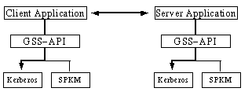

A significant enhancement to the Java security architecture is the capability to achieve single sign-on using Kerberos Version 5 in the next release of Java Standard Edition (J2SE). A single sign-on solution lets users authenticate themselves just once to access information on any of several systems. This is done using JAAS for authentication and authorization and Java GSS-API to establish a secure context for communication with a peer application. Our focus is on Kerberos V5 as the underlying security mechanism for single sign-on, although other security mechanisms may be added in the future.
With the increasing use of distributed systems users need to access resources that are often remote. Traditionally users have had to sign-on to multiple systems, each of which may involve different usernames and authentication techniques. In contrast, with single sign-on, the user needs to authenticate only once and the authenticated identity is securely carried across the network to access resources on behalf of the user.
In this paper we discuss how to use single sign-on based on the Kerberos V5 protocol. We use the Java Authentication and Authorization Service (JAAS) to authenticate a principal to Kerberos and obtain credentials that prove its identity. We show how Sun's implementation of a Kerberos login module can be made to read credentials from an existing cache on platforms that contain native Kerberos support. We then use the Java Generic Security Service API (Java GSS-API) to authenticate to a remote peer using the previously obtained Kerberos credentials. We also show how to delegate Kerberos credentials for single sign-on in a multi-tier environment.
Kerberos V5 is a trusted third party network authentication protocol designed to provide strong authentication using secret key cryptography. When using Kerberos V5, the user's password is never sent across the network, not even in encrypted form, except during Kerberos V5 administration. Kerberos was developed in the mid-1980's as part of MIT's Project Athena. A full description of the Kerberos V5 protocol is beyond the scope of this paper. For more information on the Kerberos V5 protocol please refer to [1] and [2]
Kerberos V5 is a mature protocol and has been widely deployed. It is available on Solaris as SEAM and on Windows 2000 and several other platforms. A free reference implementation in C is available from MIT. For these reasons we have selected Kerberos V5 as the underlying technology for single sign-on in J2SE.
Until recently the Java 2 security architecture solely determined privileges by the origin of the code and the public key certificates matching the code signers. However, in a multi-user environment it is desirable to further specify privileges based on the authenticated identity of the user running the code.
JAAS supplies such a capability. JAAS is a pluggable framework and programming interface specifically targeted for authentication and access control based on the authenticated identities.
The JAAS framework can be divided into two components: an authentication component and an authorization component.
The JAAS authentication component provides the ability to reliably and securely determine who is currently executing Java code, regardless of whether the code is running as an application, an applet, a bean, or a servlet.
The JAAS authorization component supplements the existing Java security framework by providing the means to restrict the executing Java code from performing sensitive tasks, depending on its codesource and depending on who is executing the code.
JAAS authentication framework is based on Pluggable Authentication Module (PAM)[3, 4]. JAAS authentication is performed in a pluggable fashion allowing system administrators to add appropriate authentication modules. This permits Java applications to remain independent of underlying authentication technologies, and new or updated authentication technologies can be seamlessly configured without requiring modifications to the application itself.
JAAS authentication framework also supports the stacking of authentication modules. Multiple modules can be specified and they are invoked by the JAAS framework in the order they were specified. The success of the overall authentication depends on the results of the individual authentication modules.
JAAS uses the term Subject to refer to any entity that is the source of a request to access resources. A Subject may be a user or a service. Since an entity may have many names or principals JAAS uses Subject as an extra layer of abstraction that handles multiple names per entity.Thus a Subject is comprised of a set of principals. There are no restrictions on principal names.
A Subject is only populated with authenticated principals. Authentication typically involves the user providing proof of identity, such as a password.
A Subject may also have security related attributes, which are referred to as credentials. The credentials can be public or private. Sensitive credentials such as private cryptographic keys are stored in the private credentials set of the Subject.
The Subject class has methods to retrieve the principals, public credentials and private credentials associated with it.
Please note that different permissions may be required for operations on these classes. For example AuthPermission("modifyPrincipals") may be required to modify the principal set of the Subject. Similar permissions are required to modify the public credentials, private credentials and to get the current Subject.
Java 2 enforces runtime access controls via java.lang.SecurityManager. The SecurityManager is consulted anytime sensitive operations are attempted. The SecurityManager delegates this responsibility to java.security.AccessController. The AccessController obtains a current image of the AccessControlContext and verifies that it has sufficient permission to do the operation requested.
JAAS provides two methods doAs and doAsPrivileged that can be used to associate an authenticated Subject with the AccessControlContext dynamically.
The doAs method associates the Subject with the current thread's access control context and subsequent access control checks are made on the basis of the code being executed and the Subject executing it.
public static Object doAs(final Subject subject,
final PrivilegedAction action)
public static Object doAs(final Subject subject,
final PrivilegedExceptionAction action)
throws PrivilegedActionException;
Both forms of the doAs method first associate the specified subject with the current Thread's AccessControlContext, and then execute the action. This achieves the effect of having the action run as the Subject. The first method can throw runtime exceptions but normal execution has it returning an Object from the run() method of its action argument. The second method behaves similarly except that it can throw a checked PrivilegedActionException from its run() method. An AuthPermission("doAs") is required to call the doAs methods.
The following methods also execute code as a particular Subject:
public static Object doAsPrivileged(final Subject subject,
final PrivilegedAction action,
final AccessControlContext acc);
public static Object doAsPrivileged(final Subject subject,
final PrivilegedExceptionAction action,
final AccessControlContext acc)
throws PrivilegedActionException;
The doAsPrivileged method behaves exactly as doAs, except that it allows the caller to specify an access control context. Thus it effectively throws away the current AccessControlContext and authorization decisions will be based on the AccessControlContext passed in.
Since the AccessControlContext is set on a per thread basis, different threads within the JVM can assume different identities. The Subject associated with a specific AccessControlContext can be retrieved by using the following method:
public static Subject getSubject(final AccessControlContext acc);
The LoginContext class provides the basic methods used to authenticate Subjects. It also allows an application to be independent of the underlying authentication technologies. The LoginContext consults a configuration that determines the authentication services or LoginModules configured for a particular application. If the application does not have a specific entry, it defaults to the entry identified as "other".
To support the stackable nature of LoginModules, LoginContext performs authentication in two phases. In the first phase or login phase, it invokes each configured LoginModule to attempt the authentication. If all the necessary LoginModules succeed, then LoginContext enters the second phase where it invokes each LoginModule again to formally commit the authentication process. During this phase the Subject is populated with the authenticated principals and their credentials. If either of the phase fails, then the LoginContext invokes each configured module to abort the entire authentication attempt. Each LoginModule then cleans up any relevant state associated with the authentication attempt.
LoginContext has four constructors that can be used to instantiate it. All of them require the configuration entry name to be passed. In addition the Subject and/or a CallbackHandler can also be passed to the constructors.
The login modules invoked by JAAS must be able to garner information from the caller for authentication. For example the Kerberos login module may require users to enter their Kerberos password for authentication.
The LoginContext allows the application to specify a callbackhandler that the underlying login modules use to interact with users. There are two callback handlers available in Merlin (J2SE 1.4) - one based on the command line and another based on a GUI.
Sun provides an implementation of the UnixLoginModule, NTLoginModule, JNDILoginModule, KeyStoreLoginModule and Krb5LoginModule in Merlin. A smart card based JAAS login module is available from GemPlus [5].
The class com.sun.security.auth.module.Krb5LoginModule is Sun's implementation of a login module for the Kerberos version 5 protocol. Upon successful authentication the Ticket Granting Ticket (TGT) is stored in the Subject's private credentials set and the Kerberos principal is stored in the Subject's principal set.
Based on certain configurable options, Krb5LoginModule can also use an existing credentials cache, such as a native cache in the operating system, to acquire the TGT and/or use a keytab file containing the secret key to implicitly authenticate a principal. Both the Solaris and Windows 2000 platforms contain a credentials cache that Krb5LoginModule can use for fetching the TGT. Solaris also contains a system wide keytab file that Krb5LoginModule can use for fetching the secret key. On all platforms, Krb5LoginModule supports options to set the file path to a ticket cache or keytab file of choice. This is useful when third-party Kerberos support is installed and Java integration is desired. Please consult the documentation for Krb5LoginModule to learn about these options. In the absence of a native cache or keytab, the user will be prompted for the password and the TGT obtained from the KDC.
Figure 1 provides a sample JAAS login configuration entry for a client application. In this example, Krb5LoginModule will use the native ticket cache to get the TGT available in it. The authenticated identity will be the identity of the Kerberos principal that the TGT belongs to.
SampleClient {
com.sun.security.auth.module.Krb5LoginModule required useTicketCache=true
};
Figure 1. Sample client configuration entry
Figure 2 provides a sample login configuration entry for a server application. With this configuration, the secret key from the keytab is used to authenticate the principal "nfs/bar.example.com" and both the TGT obtained from the Kerberos KDC and the secret key are stored in the Subject's private credentials set. The stored key may be used later to validate a service ticket sent by a client (See the section on Java GSS-API.)
SampleServer {
com.sun.security.auth.module.Krb5LoginModule
required useKeyTab=true storeKey=true principal="nfs/bar.example.com"
};
Figure 2. Sample server configuration entry
In the client code example shown in Figure 3, the configuration entry "SampleClient" will be used by the LoginContext. The TextCallbackHandler class will be used to prompt the user for the Kerberos password. Once the user has logged in, the Subject will be populated with the Kerberos Principal name and the TGT. Thereafter the user can execute code using Subject.doAs passing in the Subject obtained from the LoginContext.
LoginContext lc = null;
try {
lc = new LoginContext("SampleClient", new TextCallbackHandler());
// attempt authentication
lc.login();
} catch (LoginException le) {
...
}
// Now try to execute ClientAction as the authenticated Subject
Subject mySubject = lc.getSubject();
PrivilegedAction action = new ClientAction();
Subject.doAs(mySubject, action);
Figure 3. Sample client code
ClientAction could be an action that is allowed only for authenticated Kerberos client Principals with a specific value.
Figure 4 shows server side sample code. It is similar to the client code shown in Figure 4 except for the application entry name and the PrivilegedAction.
LoginContext lc = null;
try {
lc = new LoginContext("SampleServer", new TextCallbackHandler());
// attempt authentication
lc.login();
} catch (LoginException le) {
...
}
// Now try to execute ServerAction as the authenticated Subject
Subject mySubject = lc.getSubject();
PrivilegedAction action = new ServerAction();
Subject.doAs(mySubject, action);
Figure 4. Sample server code
To enable other vendors to provide their own Kerberos login module implementation that can be used with Java GSS-API, three standard Kerberos classes have been introduced in the javax.security.auth.kerberos package. These are KerberosPrincipal for Kerberos principals, KerberosKey for the long-term Kerberos secret key and KerberosTicket for Kerberos tickets. All implementations of the Kerberos login module must use these classes to store principals, keys and tickets in the Subject.
Upon successful authentication of a Subject, access controls can be enforced based upon the principals associated with the authenticated Subject. The JAAS principal based access controls augment the CodeSource access controls of Java 2. Permissions granted to a Subject are configured in Policy, which is an abstract class for representing the system wide access control policy. Sun provides a file based implementation of the Policy class. The Policy class is provider based so that others can provide their own policy implementation.
Enterprise applications often have varying security requirements and deploy a range of underlying technologies to achieve this. In such a scenario how do we develop a client-server application so that it can easily migrate from one technology to another? The GSS-API was designed in the Common Authentication Technology working group of the IETF to solve this problem by providing a uniform application programming interface for peer to peer authentication and secure communication that insulates the caller from the details of the underlying technology.
The API, described in a language independent form in RFC 2743 [6], accommodates the following security services: authentication, message confidentiality and integrity, sequencing of protected messages, replay detection, and credential delegation. The underlying security technology or "security mechanism" being used, has a choice of supporting one or more of these features beyond the essential one way authentication.Footnote 1
There are mainly two standard security mechanisms that the IETF has defined: Kerberos V5 [6] and the Simple Public Key Mechanism (SPKM) [8].
The API is designed such that an implementation may support multiple mechanisms simultaneously, giving the application the ability to choose one at runtime. Mechanisms are identified by means of unique object identifier's (OID's) that are registered with the IANA. For instance, the Kerberos V5 mechanism is identified by the OID {iso(1) member-body(2) United States(840) mit(113554) infosys(1) gssapi(2) krb5(2)}.
Another important feature of the API is that it is token based. i.e., Calls to the API generate opaque octets that the application must transport to its peer. This enables the API to be transport independent.
Figure 5. A multi-mechanism GSS-API implementation
The Java API for the Generic Security Service was also defined at the IETF and is documented in RFC 2853 [10]. Sun is pursuing the standardization of this API under the Java Community Process (JCP) [11] and plans to deliver a reference implementation with Merlin. Because the JCP is merely endorsing this externally defined API, the IETF assigned package namespace "org.ietf.jgss" will be retained in Merlin.
Sun's implementation of Java GSS-API, will initially ship with support for the Kerberos V5 mechanism only. Kerberos V5 mechanism support is mandatory for all Java GSS-API implementations in Java SE, although they are free to support additional mechanisms. In a future release, a Service Provider Interface (SPI) will be added so that new mechanisms can be configured statically or even at runtime. Even now the reference implementation in Merlin will be modular and support a private provider SPI that will be converted to public when standardized.
The Java GSS-API framework itself is quite thin, and all security related functionality is delegated to components obtained from the underlying mechanisms. The GSSManager class is aware of all mechanism providers installed and is responsible for invoking them to obtain these components.
The implementation of the default GSSManager that will ship with Java SE is obtained as follows:
GSSManager manager = GSSManager.getInstance();
The GSSManager can be used to configure new providers and to list all mechanisms already present. The GSSManager also serves as a factory class for three important interfaces: GSSName, GSSCredential, and GSSContext. These interfaces are described below with the methods to instantiate their implementations. For a complete API specification, readers are referred to [9] and [11].
Most calls to Java GSS-API throw a GSSException that encapsulate problems that occur both within the GSS-API framework, and within the mechanism providers.
This interface represents an entity for the purposes of Java GSS-API. An implementation of this interface is instantiated as follows:
GSSName GSSManager.createName(String name, Oid nameType)
throws GSSException
For Example:
GSSName clientName = manager.createName("duke", GSSName.NT_USER_NAME);
This call returns a GSSName that represents the user principal "duke" at a mechanism independent level. Internally, it is assumed that each supported mechanism will map the generic representation of the user to a more mechanism specific form. For instance a Kerberos V5 mechanism provider might map this name to duke@EXAMPLE.COM where EXAMPLE.COM is the local Kerberos realm. Similarly, a public key based mechanism provider might map this name to an X.509 Distinguished Name.
If we were referring to a principal that was not a user, but some sort of service, we would indicate that to the Java GSS-API call so that the mechanism knows to interpret it differently.
Example:
GSSName serverName = manager.createName("nfs@bar.example.com",
GSSName.NT_HOSTBASED_SERVICE);
The Kerberos V5 mechanism would map this name to the Kerberos specific form nfs/bar.example.com@EXAMPLE.COM where EXAMPLE.COM is the realm of the principal. This principal represents the service nfs running on the host machine bar.example.com.
Sun's implementation of the GSSName interface is a container class. The container class lazily asks the individual providers to perform their mapping when their mechanism is used and then stores each mapped element in a set of principals. In this respect an implementation of GSSName is similar to the principal set stored in a Subject. It may even contain the same elements that are in a Subject's principal set, but its use is restricted to the context of Java GSS-API.
The name element stored by the Sun Kerberos V5 provider is an instance of a subclass of javax.security.auth.kerberos.KerberosPrincipal.
This interface encapsulates the credentials owned by one entity. Like the GSSName, this interface too is a multi-mechanism container.
Its implementation is instantiated as follows:
GSSCredential createCredential(GSSName name,
int lifetime,
Oid[] desiredMechs,
int usage)
throws GSSException
Here is an example of this call on the client side:
GSSCredential clientCreds =
manager.createCredential(clientName,
8*3600,
desiredMechs,
GSSCredential.INITIATE_ONLY);
The GSSManager invokes the providers of the mechanisms listed in the desiredMechs for credentials that belong to the GSSName clientName. Additionally, it imposes the restriction that the credential must be the kind that can initiate outbound requests (i.e., a client credential), and requests a lifetime of 8 hours for it. The returned object contains elements from a subset of desiredMechs that had some credential available to satisfy this criteria. The element stored by the Kerberos V5 mechanism is an instance of a subclass of javax.security.auth.kerberos.KerberosTicket containing a TGT that belongs to the user.
Credential acquisition on the server side occurs as follows:
GSSCredential serverCreds =
manager.createCredential(serverName,
GSSCredential.INDEFINITE_LIFETIME,
desiredMechs,
GSSCredential.ACCEPT_ONLY);
The behavior is similar to the client case, except that the kind of credential requested is one that can accept incoming requests (i.e., a server credential). Moreover, servers are typically long lived and like to request a longer lifetime for the credentials such as the INDEFINITE_LIFETIME shown here. The Kerberos V5 mechanism element stored is an instance of a subclass of javax.security.auth.kerberos.KerberosKey containing the secret key of the server.
This step can be an expensive one, and applications generally acquire a reference at initialization time to all the credentials they expect to use during their lifetime.
The GSSContext is an interface whose implementation provides security services to the two peers.
On the client side a GSSContext implementation is obtained with the following API call:
GSSContext GSSManager.createContext(GSSName peer,
Oid mech,
GSSCredential clientCreds,
int lifetime)
throws GSSException
This returns an initialized security context that is aware of the peer that it must communicate with and the mechanism that it must use to do so. The client's credentials are necessary to authenticate to the peer.
On the server side the GSSContext is obtained as follows:
GSSContext GSSManager.createContext(GSSCredential serverCreds)
throws GSSException
This returns an initialized security context on the acceptor's side. At this point it does not know the name of the peer (client) that will send a context establishment request or even the underlying mechanism that will be used. However, if the incoming request is not for service principal represented by the credentials serverCreds, or the underlying mechanism requested by the client side does not have a credential element in serverCreds, then the request will fail.
Before the GSSContext can be used for its security services it has to be established with an exchange of tokens between the two peers. Each call to the context establishment methods will generate an opaque token that the application must somehow send to its peer using a communication channel of its choice.
The client uses the following API call to establish the context:
byte[] GSSContext.initSecContext(byte[] inToken,
int offset,
int len)
throws GSSException
The server uses the following call:
byte[] acceptSecContext(byte[] inToken,
int offset,
int len)
throws GSSException
These two methods are complementary and the input accepted by one is the output generated by the other. The first token is generated when the client calls initSecContext for the first time. The arguments to this method are ignored during that call. The last token generated depends on the particulars of the security mechanism being used and the properties of the context being established.
The number of round trips of GSS-API tokens required to authenticate the peers varies from mechanism to mechanism and also varies with characteristics such as whether mutual authentication or one-way authentication is desired. Thus each side of the application must continue to call the context establishment methods in a loop until the process is complete.
In the case of the Kerberos V5 mechanism, there is no more than one round trip of tokens during context establishment. The client first sends a token generated by its initSecContext() containing the Kerberos AP-REQ message [2]. In order to generate the AP-REQ message, the Kerberos provider obtains a service ticket for the target server using the client's TGT. The service ticket is encrypted with the server's long-term secret key and is encapsulated as part of the AP-REQ message. After the server receives this token, it is passed to the acceptSecContext() method which decrypts the service ticket and authenticates the client. If mutual authentication was not requested, both the client and server side contexts would be established, and the server side acceptSecContext() would generate no output.
However, if mutual authentication were enabled, then the server's acceptSecContext() would generate an output token containing the Kerberos AP-REP [2] message. This token would need to be sent back to the client for processing by its initSecContext(), before the client side context is established.
Note that when a GSSContext is initialized on the client side, it is clear what underlying mechanism needs to be used. The Java GSS-API framework can obtain a context implementation from the appropriate mechanism provider. Thereafter, all calls made to the GSSContext object are delegated to the mechanism's context implementation. On the server side, the mechanism to use is not decided until the first token from the client side arrives.
Here is a class showing how the client side of an application would be coded. This is the ClientAction class that was executed using the doAs method in Figure 3:
class ClientAction implements PrivilegedAction {
public Object run() {
...
...
try {
GSSManager manager = GSSManager.getInstance();
GSSName clientName =
manager.createName("duke", GSSName.NT_USER_NAME);
GSSCredential clientCreds =
manager.createCredential(clientName,
8*3600,
desiredMechs,
GSSCredential.INITIATE_ONLY);
GSSName peerName =
manager.createName("nfs@bar.example.com",
GSSName.NT_HOSTBASED_SERVICE);
GSSContext secContext =
manager.createContext(peerName,
krb5Oid,
clientCreds,
GSSContext.DEFAULT_LIFETIME);
secContext.requestMutualAuth(true);
// The first input token is ignored
byte[] inToken = new byte[0];
byte[] outToken = null;
boolean established = false;
// Loop while the context is still not established
while (!established) {
outToken =
secContext.initSecContext(inToken, 0, inToken.length);
// Send a token to the peer if one was generated
if (outToken != null)
sendToken(outToken);
if (!secContext.isEstablished()) {
inToken = readToken();
else
established = true;
}
} catch (GSSException e) {
....
}
...
...
}
}
Figure 6. Sample client using Java GSS-API
The corresponding section of code on the server side running the ServerAction class from Figure 5 is as follows:
class ServerAction implelemts PrivilegedAction {
public Object run() {
...
...
try {
GSSManager manager = GSSManager.getInstance();
GSSName serverName =
manager.createName("nfs@bar.example.com",
GSSName.NT_HOSTBASED_SERVICE);
GSSCredential serverCreds =
manager.createCredential(serverName,
GSSCredential.INDEFINITE_LIFETIME,
desiredMechs,
GSSCredential.ACCEPT_ONLY);
GSSContext secContext = manager.createContext(serverCreds);
byte[] inToken = null;
byte[] outToken = null;
// Loop while the context is still not established
while (!secContext.isEstablished()) {
inToken = readToken();
outToken =
secContext.acceptSecContext(inToken, 0, inToken.length);
// Send a token to the peer if one was generated
if (outToken != null)
sendToken(outToken);
}
} catch (GSSException e) {
...
}
...
...
}
}
Figure 7. Sample server using Java GSS-API
Once the security context is established, it can be used for message protection. Java GSS-API provides both message integrity and message confidentiality. The two calls that enable this are as follows:
byte[] GSSContext.wrap(byte[] clearText,
int offset,
int len,
MessageProp properties)
throws GSSException
and
byte[] unwrap(byte[] inToken,
int offset,
int len,
MessageProp properties)
throws GSSException
The wrap method is used to encapsulate a cleartext message in a token such that it is integrity protected. Optionally, the message can also be encrypted by requesting this through a properties object. The wrap method returns an opaque token that the caller sends to its peer. The original cleartext is returned by the peer's unwrap method when the token is passed to it. The properties object on the unwrap side returns information about whether the message was simply integrity protected or whether it was encrypted as well. It also contains sequencing and duplicate token warnings.
Java GSS-API allows the client to securely delegate its credentials to the server, such that the server can initiate other security contexts on behalf of the client. This feature is useful for single sign-on in a multi-tier environment.

Figure 8. Credential Delegation
The client requests credential delegation prior to making the first call to initSecContext():
void GSSContext.requestCredDeleg(boolean state)
throws GSSException
by setting state to true.
The server receives the delegated credential after context establishment:
GSSCredential GSSContext.getDelegCred() throws GSSException
The server can then pass this GSSCredential to GSSManager.createContext() pretending to be the client.
In the case of the Kerberos V5 mechanism, the delegated credential is a forwarded TGT that is encapsulated as part of the first token sent from the client to the server. Using this TGT, the server can obtain a service ticket on behalf of the client for any other service.
Previously we discussed how an application uses the GSSManager.createCredential() method to populate a GSSCredential object with mechanism specific credentials.The next two sub-sections will focus on how Java GSS-API mechanisms obtain these credentials. The mechanisms do not themselves perform a user login. Instead, the login is performed prior to using Java GSS-API and the credentials are assumed to be stored in some cache that the mechanism provider is aware of. The GSSManager.createCredential() method merely obtains references to those credentials and returns them in a GSS-centric container, the GSSCredential.
In the Java 2 platform we impose the restriction that the credentials cache that Java GSS-API mechanism providers use to obtain these elements must exclusively be the public and private credential sets in the Subject that is on the current access control context.
This model has the advantage that credential management is simple and predictable from the application's point of view. An application, given the right permissions, can purge the credentials in the Subject or renew them using standard Java API's. If it purged the credentials, it would be sure that the Java GSS-API mechanism would fail, or if it renewed a time based credential it would be sure that the mechanism would succeed.
Here is the sequence of events relevant to credential acquisition when the Kerberos V5 mechanism is used by the client application in Figures 3 and 6:
On the server side, when the Kerberos login is successful in step 2, Krb5LoginModule stores the KerberosKey for the server in the Subject in addition to the KerberosTicket. Later on the KerberosKey is retrieved in steps 5 through 7 and used to decrypt the service ticket that the client sends.
The default credential acquisition model for Java GSS-API requires credentials to be present in the current Subject. Typically, the credentials are placed there after a JAAS login by the application.
There might be cases where an application wishes to use Kerberos credentials from outside the Subject. It is recommended that such credentials be read as part of the initial JAAS login, either by configuring Krb5LoginModule to read them, or by writing a custom login module that reads them. However, some applications might have constrains that either prevent them from using JAAS prior to calling Java GSS-API, or force them to use some Kerberos mechanism provider that does not retrieve credentials from the current Subject.
In order to accommodate such cases while still retaining the standard model for others, the system property javax.security.auth.useSubjectCredsOnly was added. This system property serves as a boolean where a value of true requires that the standard credential acquisition model be followed, and a value of false permits the provider to use any cache of it choice. The default value of this property (when it is not set) will be assumed to be true.
If there is no valid Kerberos credential in the current Subject, and this property is true, then the Kerberos mechanism throws a GSSException. Setting this property to false does not necessarily mean that the provider has to use a cache other than the current Subject, it only gives the provider the latitude to do so if it wishes.
The Sun provider for the Kerberos V5 GSS-API mechanism always obtains credentials from a Subject. If there are no valid credentials in the current Subject, and this property is set to false, then the provider attempts to obtain new credentials from a temporary Subject by invoking a JAAS login itself. It uses the text callback handler for input/output with the user, and the JAAS configuration entry identified by"other" for the list of modules and options to use.Footnote 2
The Sun provider for the Kerberos V5 GSS-API mechanism assumes that one of these modules will be a Kerberos login module. It is possible to configure the modules listed under "other" to read a pre-existing cache so that the user is not unexpectedly prompted for a password in the middle of a Java GSS-API call. The new Subject that is populated by this login is discarded by the Kerberos GSS-API mechanism just as soon as the required credentials are retrieved from it.
An important class of applications that should be able to capitalize on Java single sign-on are applets. For this discussion we assume that the browser JRE has all the required packages or the Java plugin is used with a Merlin JRE installed by the user.
One complication in using applets arises mostly out of the fact that before an applet can use Java GSS-API, it must perform a JAAS login. The main problems with this are (a) an increase in the effort required on the part of the applet developer (b)unnecessary repeated login by the same user each time he or she starts an applet.
A good model to solve this problem would be to have the browser (or the Java plugin) perform a JAAS login once at startup. This would provide a Subject that could always be associated with the access control context whenever any Java code was run. As a result, the applet code would not need to perform a JAAS login prior to using Java GSS-API, and the user login would occur just once.
In the absence of this login functionality in the browser (or Java plugin), applets can still avoid having to perform a JAAS login themselves. To do so, the applets would have to set the javax.security.auth.useSubjectCredsOnly system property to false and use a GSS-API mechanism provider that is capable of obtaining credentials from sources other than current Subject. When using a Sun JRE with a Sun Kerberos GSS-API provider, expect the mechanism to perform a JAAS login to obtain new credentials as explained in the previous section. The applet deployer would only need to ensure that the appropriate modules and options are listed in the entry "other" in the JAAS configuration used by the JRE. This saves the applet developer from calling into JAAS API's directly, but it does not stop the repeated JAAS login that might happen with each applet the user runs. However, by configuring the login modules to read a pre-existing native cache, the deployer can both hide the login from the user, and minimize the overhead in the multiple logins. (See how this is done for the JAAS configuration entry "SampleClient" in Figure 1.)
The convenience of single sign-on also introduces new risks. What happens if a malicious user gains access to your unattended desktop from where he or she can start applets as you? What happens if malicious applets sign on as you to services that they are not supposed to?
For the former, we have no solution but to caution you against leaving your workstation unlocked! For the latter, we have many authorizations checks in place.
To illustrate some details of the permissions model consider an example where your browser has performed a JAAS login at startup time and associated a Subject with all applets that run in it.
The Subject is protected from rogue applets by means of the javax.security.auth.AuthPermission class. This permission is checked whenever code tries to obtain a reference to the Subject associated with any access control context.
Even if an applet were given access to a Subject, it needs a javax.security.auth.PrivateCredentialPermission to actually read the sensitive private credentials stored in it.
Other kinds of checks are to be done by Java GSS-API mechanism providers as they read credentials and establish security contexts on behalf of the credential's owner. In order to support the Kerberos V5 mechanism, two new permission classes have been added with the package javax.security.auth.kerberos:
ServicePermission(String servicePrinicipal, String action) DelegationPermission(String principals)
As new GSS-API mechanisms are standardized for Java SE, more packages will be added that contain relevant permission classes for providers of those mechanisms.
The Kerberos GSS-API mechanism permission checks take place at the following points in the program's execution:
The GSSManager.createCredential() method obtains mechanism specific credential elements from a cache such as the current Subject and stores them in a GSSCredential container. Allowing applets to acquire GSSCredential freely, even if they cannot use them to do much, is undesirable. Doing so leaks information about the existence of user and service principals. Thus, before an application can acquire a GSSCredential with any Kerberos credential elements in it, a ServicePermission check is made.
On the client side, a successful GSSCredential acquisition implies that a TGT has been accessed from a cache. Thus the following ServicePermission is checked:
ServicePermission("krbtgt/EXAMPLE.COM@EXAMPLE.COM", "initiate");
The service principal krbtgt/EXAMPLE.COM@EXAMPLE.COM represents the ticket granting service (TGS) in the Kerberos realm EXAMPLE.COM, and the action "initiate" suggests that a ticket to this service is being accessed. The TGS service principal will always be used in this permission check at the time of client side credential acquisition.
On the server side, a successful GSSCredential acquisition implies that a secret key has been accessed from a cache. Thus the following ServicePermission is checked:
ServicePermission("nfs/bar.example.com@EXAMPLE.COM", "accept");
Here the service principal nfs/bar.example.com represents the Kerberos service principal and the action "accept" suggests that the secret key for this service is being requested.
An applet that has permissions to contact a particular server, say the LDAP server, must not instead contact a different server such as the FTP server. Of course, the applet might be restricted from doing so with the help of SocketPermission. However, it is possible to use ServicePermission to restrict it from authenticating using your identity, even if the network connection was permitted.
When the Kerberos mechanism provider is about to initiate context establishment it checks the ServicePermission:
ServicePermission("ftp@EXAMPLE.COM", "initiate");
This check prevents unauthorized code from obtaining and using a Kerberos service ticket for the principal ftp@EXAMPLE.COM.
Providing limited access to specific service principals using this permission is still dangerous. Downloaded code is allowed to communicate back with the host it originated from. A malicious applet could send back the initial GSS-API output token that contains a KerberosTicket encrypted in the target service principal's long-term secret key, thus exposing it to an offline dictionary attack. For this reason it is not advisable to grant any "initiate" ServicePermission to code downloaded from untrusted sites.
On the server side, the permission to use the secret key to accept incoming security context establishment requests is already checked during credential acquisition. Hence, no checks are made in the context establishment stage.
An applet that has permission to establish a security context with a server on your behalf also has the ability to request that your credentials be delegated to that server. But not all servers are trusted to the extent that your credentials can be delegated to them. Thus, before a Kerberos provider obtains a delegated credential to send to the peer, it checks the following permission:
DelegationPermission(" \"ftp@EXAMPLE.COM\" \"krbtgt/EXAMPLE.COM@EXAMPLE.COM\" ");
This permission allows the Kerberos service principal ftp@EXAMPLE.COM to receive a forwarded TGT (represented by the ticket granting service krbtgt/EXAMPLE.COM@EXAMPLE.COM).Footnote 3
In this paper we have presented a framework to enable single sign-on in Java. This requires sharing of credentials between JAAS which does the initial authentication to obtain credentials, and Java GSS-API which uses those credentials to communicate securely over the wire. We have focused on Kerberos V5 as the underlying security mechanism, but JAAS's stackable architecture and Java GSS-API's multi-mechanism nature allow us to use any number of different mechanisms simultaneously.
The Kerberos login module for JAAS is capable of reading native caches so that users do not have to authenticate themselves beyond desktop login on platforms that support Kerberos. Moreover, the Kerberos V5 mechanism for Java GSS-API allows credentials to be delegated which enables single sign-on in multi-tier environments.
Finally, a number of permissions checks are shown to prevent the unauthorized use of the single-sign on features provided by Kerberos.
We thank Gary Ellison, Charlie Lai, and Jeff Nisewanger for their contribution at each stage of the Kerberos single sign-on project. JAAS 1.0 was implemented by Charlie as an optional package for Kestrel (J2SE 1.3). Gary has been instrumental in designing the permissions model for the Kerberos Java GSS-API mechanism. We are grateful to Bob Scheifler for his feedback on integrating JAAS 1.0 into Merlin and to Tim Blackman for the KeyStoreLoginModule and CallbackHandler implementations. We also thank Bruce Rich, Tony Nadalin, Thomas Owusu and Yanni Zhang for their comments and suggestions. We thank Mary Dageforde for the documentation and tutorials. Sriramulu Lakkaraju, Stuart Ke and Shital Shisode contributed tests for the projects. Maxine Erlund provided management support for the project.
Footnote 1 The GSS-API Kerberos mechanism performs client authentication at the minimum.
Footnote 2 Actually it first tries to use the JAAS configuration entry"com.sun.security.jgss.initiate" for the client and "com.sun.security.jgss.accept" for the server and falls back on the entry for "other", if these entries are missing. This gives system administrators some additional control over its behavior.
Footnote 3 The use of two principal names in this permission allows for finer grained delegation such as proxy tickets for specific services unlike a carte blanche forwarded TGT. Even though the GSS-API does not allow for proxy tickets, another API such as JSSE might support this idea at some point in the future.